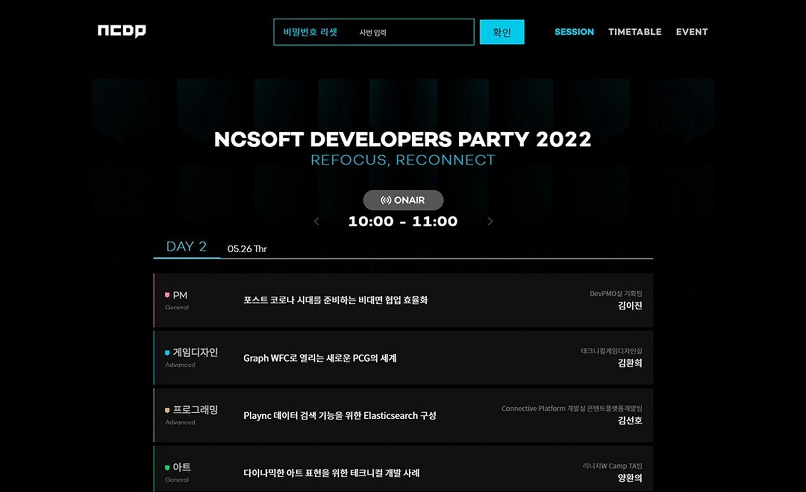

Frontend
- React
- Next.js
- TypeScript
- Zustand
- Redux
Selected Work / 04
요구사항 분석부터 상태 관리, 외부 연동, QA와 운영 대응까지 맡은 범위를 끝까지 연결했습니다.

웹소설 사용자 서비스와 운영 CMS를 리뉴얼하며 메인·로그인·결제·뷰어 등 약 40페이지를 담당했습니다.
규모 확장에 맞춰 Zustand→Redux 상태관리 전환프로젝트 상세
IP·파일·URL 등 위협 데이터를 수집·분류하고 대시보드와 실시간 알림을 제공하는 금융 보안 관리 시스템입니다.
폐쇄망 반입 제약을 사전 목록화로 해결프로젝트 상세
44개 강연의 온라인 진행과 참가자 접근을 지원한 NCSOFT 사내 개발자 컨퍼런스 사이트입니다.
프로젝트 상세매달 무작위로 배치되는 교대근무표를 조건에 맞게 자동 생성하는, 기획·개발·배포를 1인 수행한 실사용 서비스입니다.
혼자 끝까지 · 실업무에 6개월 적용프로젝트 상세Technical Toolkit
실제 SI 프로젝트와 개인 서비스 개발에 반복해서 사용해 온 기술을 영역별로 정리했습니다.
How I Work
화면 단위보다 사용자의 목표, 데이터 흐름과 예외 상황을 먼저 구조화합니다.
공통 컴포넌트와 명확한 상태 관리, CI/CD 자동화로 다음 변경의 비용까지 줄입니다.
QA, 분석 데이터와 실제 운영 피드백을 구현의 마지막 단계로 포함합니다.